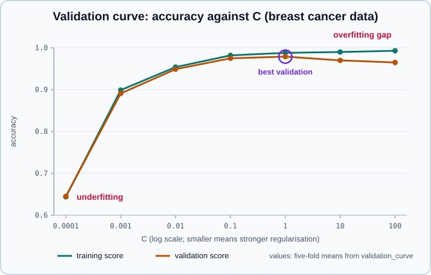
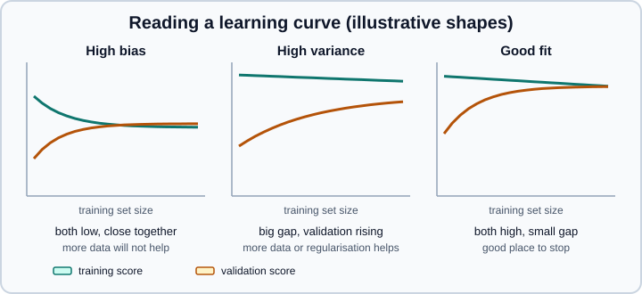

Validation & Learning Curves in scikit-learn
|
This content was generated with the assistance of AI and should be verified against the official documentation before being relied on in production. |
A single cross-validated score says how good a model is; it does not say why it is not better. Two plots answer the why.
A validation curve shows how the training and validation scores change as one hyper-parameter changes, and tells you
whether the model is too simple or too flexible. A learning curve shows how the scores change with the number of training
examples, and tells you whether collecting more data is likely to help. This page covers validation_curve,
learning_curve, the plotting classes ValidationCurveDisplay and LearningCurveDisplay, how to read the curves, and the
pitfalls (sorted data, a score that is no longer an unbiased estimate, curves that look better than they should).
It targets scikit-learn 1.9 (1.9.1 at the time of writing) with NumPy 2.5, pandas 3.1 and Matplotlib 3.11, and was checked in October 2026. Examples target Python 3.13 or 3.14 and were run on Python 3.13. Every example was run with Python 3.13, scikit-learn 1.9.1 and NumPy 2.5.4, and the printed output is the real output. The folds come from Cross-Validation & Splitters; the idea of bias and variance is introduced in Machine Learning Fundamentals.
Bias, variance and what the curves measure
The generalisation error of an estimator can be decomposed into bias, variance and noise. The bias is the average error over different training sets: a model that is too simple (a straight line through a curved relationship) is systematically wrong whatever the data, and is said to underfit. The variance measures how sensitive the model is to the particular training set: a model that is too flexible fits the noise of its sample, scores very well on the training data and poorly on new data, and is said to overfit. Noise belongs to the data and cannot be removed by any model. Bias and variance usually pull in opposite directions as the flexibility of the model changes, so the aim is to choose the model and the hyper-parameters at which both are acceptably low. More training data reduces the variance but only helps when the true relationship is too complex for a simpler model to learn; it does not repair a biased model.
The two tools look at the same two numbers, the score on the training folds and the score on the validation fold, along different axes:
| Tool | What varies | Question it answers |
|---|---|---|
|
The value of one hyper-parameter |
Is the model underfitting or overfitting at this setting, and where is the sweet spot? |
|
The number of training examples |
Would more data help? Is the problem bias or variance? How does training time scale? |
validation_curve
validation_curve fits the estimator for every value in param_range on every cross-validation split and returns two arrays
of shape (n_params, n_splits): the training scores and the validation scores. Its signature in 1.9 is:
validation_curve(estimator, X, y, *, param_name, param_range, groups=None, cv=None, scoring=None,
n_jobs=None, pre_dispatch="all", verbose=0, error_score=nan, params=None)Source: API reference, validation_curve
param_name can reach into a pipeline with the double-underscore syntax.
import numpy as np
from sklearn.datasets import load_breast_cancer
from sklearn.linear_model import LogisticRegression
from sklearn.model_selection import StratifiedKFold, validation_curve
from sklearn.pipeline import make_pipeline
from sklearn.preprocessing import StandardScaler
X, y = load_breast_cancer(return_X_y=True)
model = make_pipeline(StandardScaler(), LogisticRegression(max_iter=5000))
Cs = np.logspace(-4, 2, 7)
cv = StratifiedKFold(5, shuffle=True, random_state=0)
train, valid = validation_curve(model, X, y, param_name="logisticregression__C", param_range=Cs,
cv=cv, scoring="accuracy", n_jobs=1)
print(train.shape, valid.shape) # (n_params, n_splits)
print(" C train valid")
for c, tr, va in zip(Cs, train.mean(axis=1), valid.mean(axis=1)):
print(f"{c:8.4f} {tr:7.3f} {va:7.3f}")
print("best C by validation:", Cs[valid.mean(axis=1).argmax()])(7, 5) (7, 5)
C train valid
0.0001 0.644 0.645
0.0010 0.899 0.891
0.0100 0.954 0.949
0.1000 0.982 0.975
1.0000 0.988 0.979
10.0000 0.990 0.970
100.0000 0.993 0.965
best C by validation: 1.0
The figure is drawn from the table above. C is the inverse of the regularisation strength, so small values mean strong
regularisation:
-
At
C = 0.0001both scores are about 0.64: the model is so constrained that it is close to a constant prediction. Both scores are low and close together, the signature of underfitting (high bias). -
From
C = 0.001toC = 1both scores rise together; the gap between them is small. -
Beyond
C = 1the training score keeps creeping up (0.988 to 0.993) while the validation score falls (0.979 to 0.965): the gap widens, which is overfitting (high variance). The best validation score, atC = 1, is where the validation curve peaks.
The user guide summarises the reading: if the training score and the validation score are both low, the estimator is underfitting; if the training score is high and the validation score is low, it is overfitting; a low training score with a high validation score is usually not possible, and if you see it, check the data splits, the scoring and a leak.
A caution that belongs to every validation curve: the best validation score of the curve was used to choose the
hyper-parameter, so it is no longer an unbiased estimate of generalisation. Choosing the parameter by hand from a curve is
legitimate, but report performance on data that played no part in the choice (a test set, or the outer loop of nested
cross-validation as in Grid, Randomized & Halving Search). The
curve is for understanding one parameter at a time; a search with GridSearchCV is the tool for choosing several together.
ValidationCurveDisplay
ValidationCurveDisplay.from_estimator, with the same required arguments as validation_curve, computes the curve with validation_curve and plots it, with Matplotlib. It accepts ax, score_name,
score_type ("train", "test" or "both"), std_display_style ("fill_between", "errorbar" or None),
negate_score (to plot errors rather than negated neg_ scores), line_kw, fill_between_kw and errorbar_kw. When
you already have the arrays, ValidationCurveDisplay(param_name=..., param_range=..., train_scores=..., test_scores=...).plot() draws them without refitting. The x axis is put on a log scale automatically when the values are
spaced geometrically.
import matplotlib
matplotlib.use("Agg") # draw to a file; omit this line in a notebook
import matplotlib.pyplot as plt
import numpy as np
from sklearn.datasets import load_digits
from sklearn.model_selection import LearningCurveDisplay, ValidationCurveDisplay, ShuffleSplit
from sklearn.svm import SVC
X, y = load_digits(return_X_y=True)
fig, (ax1, ax2) = plt.subplots(1, 2, figsize=(11, 4), constrained_layout=True)
ValidationCurveDisplay.from_estimator(
SVC(), X, y, param_name="gamma", param_range=np.logspace(-6, -1, 6),
cv=5, score_name="Accuracy", ax=ax1, n_jobs=1)
LearningCurveDisplay.from_estimator(
SVC(gamma=0.001), X, y, train_sizes=np.linspace(0.1, 1.0, 5), cv=ShuffleSplit(10, test_size=0.2, random_state=0),
score_name="Accuracy", score_type="both", std_display_style="errorbar", ax=ax2, n_jobs=1)
ax1.set_title("ValidationCurveDisplay"); ax2.set_title("LearningCurveDisplay")
fig.savefig("curves.png", dpi=80)
print(type(ax1).__name__, ax1.get_xscale(), "saved")Axes log savedThe two classes follow the usual Display pattern (see Display
Objects): from_estimator does the computation and the drawing, the returned object keeps the ax_ and figure_ it drew
on, and passing ax lets you place the curve in your own figure; the examples use the explicit fig, ax =
plt.subplots() interface. The printed log confirms that the validation display chose a logarithmic x axis for the gamma range.
learning_curve
learning_curve trains the estimator on subsets of increasing size taken from every training fold and returns the sizes
actually used, the training scores and the validation scores (shape (n_sizes, n_splits)), plus the fit and score times
when return_times=True. Its signature in 1.9 is:
learning_curve(estimator, X, y, *, groups=None, train_sizes=np.linspace(0.1, 1.0, 5), cv=None, scoring=None,
exploit_incremental_learning=False, n_jobs=None, pre_dispatch="all", verbose=0, shuffle=False,
random_state=None, error_score=nan, return_times=False, params=None)Source: API reference, learning_curve
A comparison of two estimators, with times:
import numpy as np
from sklearn.datasets import load_digits
from sklearn.model_selection import ShuffleSplit, learning_curve
from sklearn.naive_bayes import GaussianNB
from sklearn.svm import SVC
X, y = load_digits(return_X_y=True)
cv = ShuffleSplit(n_splits=10, test_size=0.2, random_state=0)
for name, est in [("GaussianNB", GaussianNB()), ("SVC(gamma=0.001)", SVC(gamma=0.001))]:
sizes, train, valid, fit_t, score_t = learning_curve(
est, X, y, cv=cv, train_sizes=np.linspace(0.1, 1.0, 5), return_times=True, n_jobs=1)
print(name)
print(" sizes ", sizes)
print(" train ", train.mean(axis=1).round(3))
print(" valid ", valid.mean(axis=1).round(3))
print(" fit s ", fit_t.mean(axis=1).round(4))GaussianNB
sizes [ 143 467 790 1113 1437]
train [0.945 0.898 0.881 0.869 0.861]
valid [0.761 0.832 0.848 0.849 0.856]
fit s [0.0005 0.0004 0.0005 0.0005 0.0006]
SVC(gamma=0.001)
sizes [ 143 467 790 1113 1437]
train [1. 0.999 0.999 0.999 0.999]
valid [0.926 0.979 0.988 0.991 0.993]
fit s [0.0011 0.0039 0.0072 0.0113 0.0159]Source: scikit-learn user guide, Learning curve; scikit-learn example, Plotting learning curves and checking models' scalability

On the digits dataset (1797 samples, 10 classes, with ten shuffled 80/20 splits, so the largest training size is 1437):
-
GaussianNB shows the high-bias pattern. Its training score falls from 0.945 to 0.861 as more data is added (a simple model cannot memorise more examples), its validation score rises from 0.761 to 0.856, and the two meet near 0.86. Both are modest and converge: more data will not help much; a more expressive model might.
-
SVC(gamma=0.001) is nearly perfect on the training data (0.999 to 1.0) while its validation score climbs from 0.926 to 0.993. The gap is large with a small training set and closes as data is added, the high-variance pattern that more data cures. With 143 examples there is a 7-point gap and with 1437 less than one point.
-
Fit time of the SVC grows from about 1 ms to 16 ms with the training size, faster than linearly in the number of examples (a tenfold increase in data costs about fourteen times more), while GaussianNB stays near half a millisecond: the
fit_tarray is the scalability curve that the user guide’s example plots in a second panel.
The arguments that matter
-
train_sizesis a sequence. Floats in (0, 1] are fractions of the maximum training-set size, which is the size of a training fold; integers are absolute numbers of examples and must not exceed that maximum. The default is five values from 10 % to 100 %. The returnedtrain_sizes_absis what was actually used (143 to 1437 above). -
cvworks as incross_val_score. For a learning curve the training folds are re-used at several sizes, so the curve is a property of the cross-validation scheme as well; aShuffleSplitwith many repeats gives smoother curves than five folds. -
scoringis any scorer; remember theneg_convention for error metrics (negate_score=Truein the display flips the sign back). -
shuffleandrandom_state: withshuffle=False(default) the firstnrows of each training fold are used for a size ofn. On data sorted by class or by time, small sizes then contain only some of the classes, as the next example shows; setshuffle=Truefor unordered problems. For time series keep the order and use a time-series splitter. -
exploit_incremental_learning=Truemakes the function callpartial_fiton a single model, adding examples chunk by chunk instead of refitting from scratch for every size. It needs an estimator that implementspartial_fit, such asSGDClassifierorMultinomialNB. -
return_times=Truereturns the fit and score times per size and split, for scalability curves. -
error_scoreandn_jobsbehave as in the other cross-validation functions.
import warnings
from sklearn.datasets import load_iris
from sklearn.model_selection import StratifiedKFold, learning_curve
from sklearn.svm import SVC
X, y = load_iris(return_X_y=True) # sorted by class
cv = StratifiedKFold(5)
for shuffle in (False, True):
with warnings.catch_warnings(record=True) as caught:
warnings.simplefilter("always")
sizes, train, valid = learning_curve(SVC(kernel="linear"), X, y, cv=cv, train_sizes=[10, 30, 60, 120],
shuffle=shuffle, random_state=0)
print(f"shuffle={shuffle!s:5} validation {valid.mean(axis=1).round(2)} warnings {sorted({w.category.__name__ for w in caught})}")shuffle=False validation [ nan nan 0.67 0.98] warnings ['FitFailedWarning']
shuffle=True validation [0.87 0.95 0.98 0.98] warnings []Source: API reference, learning_curve
Because iris is sorted by class, the first 10 or 30 rows of a training fold contain a single class, the estimator cannot be
fitted (the scores are nan and a FitFailedWarning is raised) and at 60 rows only two classes are present, which lowers
the score. Shuffling fixes all three. The curve gives wrong answers silently if you do not look at the warnings.
The size arguments accept absolute numbers and incremental learning in the following way:
from sklearn.datasets import load_digits
from sklearn.linear_model import SGDClassifier
from sklearn.model_selection import learning_curve, ShuffleSplit
X, y = load_digits(return_X_y=True)
cv = ShuffleSplit(n_splits=5, test_size=0.2, random_state=0)
sizes, train, valid = learning_curve(SGDClassifier(random_state=0, tol=None, max_iter=20), X, y, cv=cv,
train_sizes=[0.2, 0.6, 1.0], exploit_incremental_learning=True)
print(sizes, valid.mean(axis=1).round(3))
# absolute sizes vs fractions: integers are counts, floats are fractions of the largest training set
s1, *_ = learning_curve(SGDClassifier(random_state=0), X, y, cv=cv, train_sizes=[100, 400, 1000])
print(s1)
try:
learning_curve(SGDClassifier(), X, y, cv=cv, train_sizes=[100, 5000])
except ValueError as exc:
print("ValueError:", str(exc)[:70], "...")[ 287 862 1437] [0.799 0.863 0.893]
[ 100 400 1000]
ValueError: train_sizes has been interpreted as absolute numbers of training sampl ...Source: API reference, learning_curve
LearningCurveDisplay and plotting the arrays yourself
LearningCurveDisplay.from_estimator takes the same arguments as learning_curve plus the drawing options of the validation
display, and returns the display, with train_scores, test_scores and train_sizes stored on it. For a figure that
combines several estimators, as in the user guide’s comparison of naive Bayes and an SVM, it is simpler to call
learning_curve and draw the arrays with the explicit Matplotlib interface:
import matplotlib
matplotlib.use("Agg")
import matplotlib.pyplot as plt
import numpy as np
from sklearn.datasets import load_digits
from sklearn.model_selection import ShuffleSplit, learning_curve
from sklearn.naive_bayes import GaussianNB
from sklearn.svm import SVC
X, y = load_digits(return_X_y=True)
cv = ShuffleSplit(n_splits=10, test_size=0.2, random_state=0)
fig, ax = plt.subplots(figsize=(6, 4))
for name, est, color in [("GaussianNB", GaussianNB(), "tab:blue"), ("SVC(gamma=0.001)", SVC(gamma=0.001), "tab:orange")]:
sizes, train, valid = learning_curve(est, X, y, cv=cv, train_sizes=np.linspace(0.1, 1.0, 5), n_jobs=1)
for scores, style in ((train, "--"), (valid, "-")):
m, s = scores.mean(axis=1), scores.std(axis=1)
ax.plot(sizes, m, style, color=color, label=f"{name} {'train' if style == '--' else 'validation'}")
ax.fill_between(sizes, m - s, m + s, color=color, alpha=0.12)
ax.set_xlabel("training examples"); ax.set_ylabel("accuracy"); ax.legend(fontsize=7)
fig.savefig("manual.png", dpi=80)
print("saved", fig.get_size_inches())saved [6. 4.]Reading the curves: a checklist
| What you see | Diagnosis | What to try |
|---|---|---|
Training and validation both low and close, flat as data grows |
High bias (underfitting) |
A more flexible model, more or better features, weaker regularisation. More data will not help. |
Training high, validation clearly lower, gap closing as data grows |
High variance (overfitting), but data-hungry |
More data, stronger regularisation, a simpler model, fewer features, bagging. |
Training high, validation lower, gap flat even with all the data |
High variance that data will not cure |
Regularise, simplify, check for duplicated or group-correlated rows (use a group splitter). |
Both high, small gap |
Good fit |
Stop; tune the remaining details with a search. |
Validation higher than training |
Suspect a bug or a leak |
Check the splits, scoring, and that the training and validation folds are not the wrong way round. |
Large spread (standard deviation) across folds |
Unstable estimate |
More folds or repeated splits, more data. |
Additional cautions:
-
Use the same scoring and the same cross-validation scheme on the validation and learning curves of one model, otherwise the curves cannot be compared.
-
A learning curve with five points is coarse. Add more sizes at the small end when the curve is still steep there.
-
The curves are only as trustworthy as the split: grouped or time-ordered rows need
GroupKFoldorTimeSeriesSplitpassed ascv(withgroups=where needed), or the validation curve will look better than the model really is. -
Neither curve is a test of generalisation. Both use validation folds that influenced decisions the moment you act on them.
Where older books and tutorials are outdated
-
from sklearn.learning_curve import learning_curve, validation_curvewas the import before 0.18 (2016); the modulesklearn.learning_curvewas deprecated then and is gone, so usefrom sklearn.model_selection import learning_curve, validation_curve. -
Tutorials from that era, and many blog posts since, copy a long helper called
plot_learning_curvethat draws the curve by hand; since 1.2LearningCurveDisplay.from_estimatordoes the same in one call, andValidationCurveDisplay(1.3) does it for validation curves. -
The
log_scaleparameter of the display’splotmethod was deprecated in 1.3 and removed in 1.5; the x axis scale is now chosen from the spacing of the data points, or set directly on the Matplotlibax. -
The user guide’s own examples and many tutorials shuffle the iris data with
np.random.seedandnp.random.shufflebefore callingvalidation_curve, because iris is sorted by class and the default splitting would otherwise be unrepresentative. Today passshuffle=Truetolearning_curve, or a shuffling splitter ascv. -
Books that plot only the training error against the model complexity, or that compute a "learning curve" from a single train/test split, do not show the variability that the fold-by-fold arrays make visible.